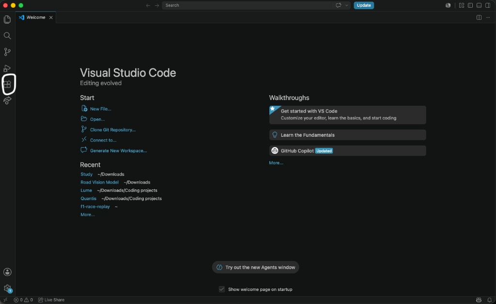
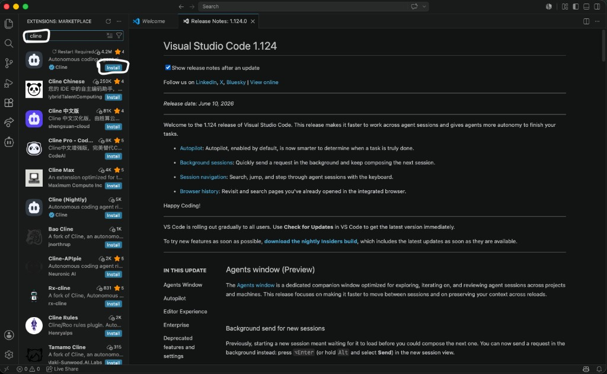
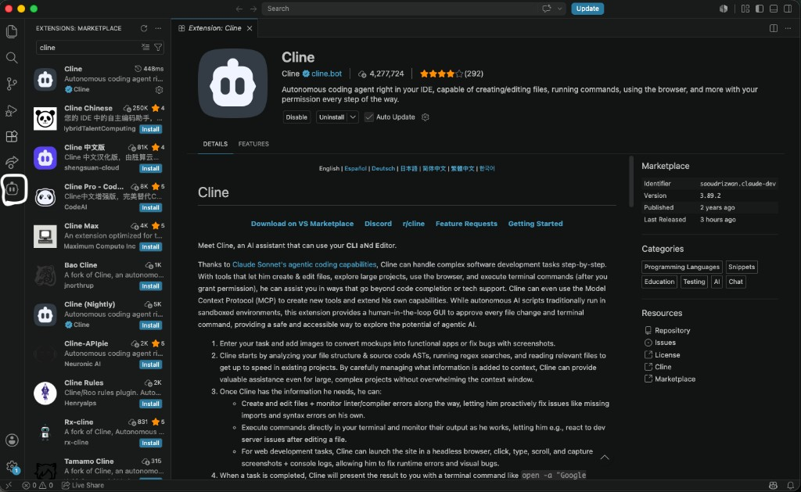
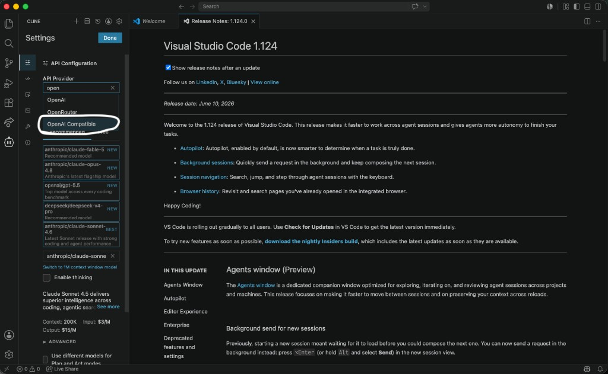
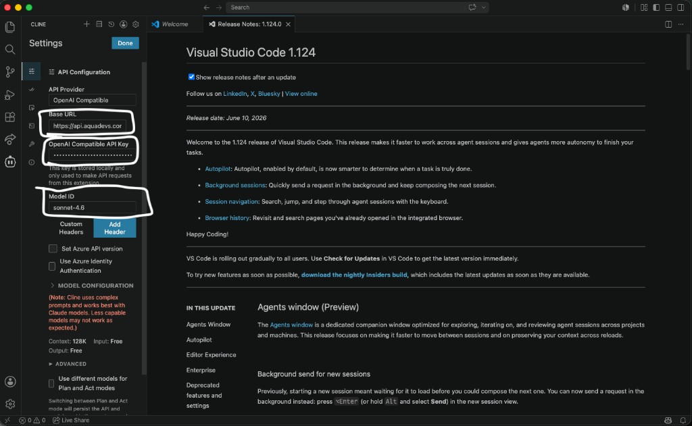

Installation Steps
1. Install Cline Extension
Open standard VS Code, navigate to the Extensions Marketplace (Cmd + Shift + X), and search for Cline. Click Install.


2. Open Cline Panel
Click the Cline Icon on your left activity bar to open the primary workspace panel.

3. Open Settings
Click the Gear Icon (Settings) in the top-right corner of the Cline panel.
4. Select API Provider
Set the API Provider dropdown menu to OpenAI Compatible.

5. Configure Connection Parameters
Configure the connection parameters exactly as follows:

Base URL: https://api.aquadevs.com/v1
API Key: YOUR_AQUA_SECRET_KEY
Model ID: loading… (or loading…)API Key sourced from your Aqua Dashboard
6. Initialize Connection
Scroll to the bottom of the settings sheet and click Done to initialize the handshake.
Complete
After configuration, you can start using AQUA provider models with Cline.
💡 Developer Tip: Use Cline's transparent context tracker at the top of the chat panel to see exactly how many tokens are active. You can click on specific directories or individual files to manually uncheck them from the context loop, keeping your prompts lightweight and precise!